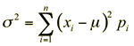

Variance and standard deviation
The centre of a discrete distribution and its spread are important. The variance of a discrete random variable is defined as:

This is a difficult calculation that you will not be required to make, so you do not need to learn the formula.